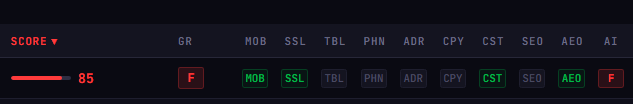
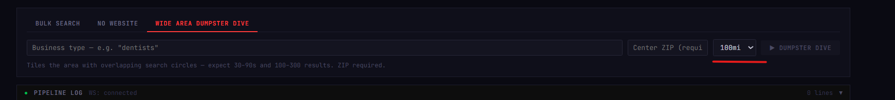
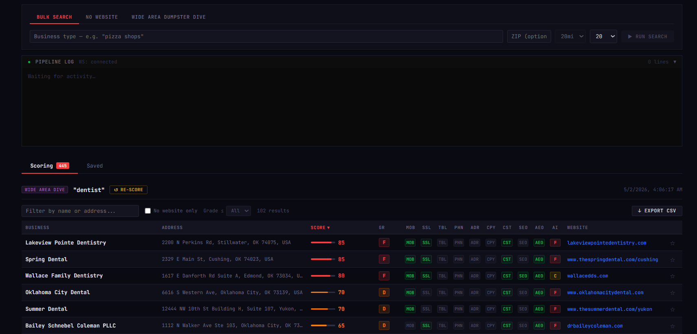

The YouTube Arbitrage Play, and Why Most People Are Winging It
There's a side hustle making the rounds on YouTube and TikTok right now. The pitch goes like this: search Google Maps for local businesses in your area, find ones with ugly or missing websites, spin up an AI-generated site in an afternoon, cold-call the owner, and flip the site for $500–$2,000. Rinse and repeat.
It works. The market is real. Local businesses like dentists, HVAC companies, plumbers, and landscapers are often sitting on websites that were built in 2009 and haven't been touched since. No mobile layout. Running HTTP. Table-based design. They're leaving money on the table every day and most of them know it.
The problem is the workflow most people are using: open Maps, eyeball a listing, check if the site looks bad, move on. It's manual, it's slow, and "looks bad" is completely subjective. You end up spending 40 minutes finding 10 leads, half of which aren't actually worth pitching, and you've got nothing to show for your time except a messy browser tab collection.
I built DumpsterSites to solve that. Qualify first, pitch second.
What DumpsterSites Does
DumpsterSites runs locally via Docker. You give it a search query like
dentists Oklahoma City and it does three things automatically:
- Discovers businesses via Google Maps (including phone number, address, and existing website URL)
- Scrapes each business's website and runs it through a scoring pipeline
- Returns a ranked list scored 0–100, where higher means worse site and better rebuild opportunity
The output is a sortable table you can work from directly, plus a CSV export for outreach. The whole point is that you know exactly which businesses are worth calling before you pick up the phone. You have the receipts to back up your pitch.
How the Scoring Works
Every site gets graded A through F and scored across nine factors. Each factor is either a hit or a miss. When the tool finds a problem, that factor's chip lights up green in the results table. More green chips means a worse site. Here's what it's checking:
- MOB: No mobile viewport. The site will break on a phone.
- SSL: Running on HTTP, not HTTPS. A security red flag and an SEO penalty.
- TBL: Table-based layout. A relic from the early 2000s.
- PHN: No phone number visible. A local business with no call-to-action.
- ADR: No address visible. Bad for local SEO and customer trust.
- CPY: Copyright year is 3+ years old. A reliable signal the site is abandoned.
- CST: Custom coded, not on Wix or Squarespace. A real target. Someone who once paid a developer and hasn't touched it since.
- SEO: Missing meta description, H1, or title tag. Invisible to search engines.
- AEO: No structured data, JSON-LD, or Open Graph. Won't show rich results.
- AI: Claude AI visual design grade (A-F). An overall aesthetic assessment of the design quality.
{kind=link}

A single result row: score bar on the left, letter grade badge, then each factor chip lighting up green where a problem was found.
The score is additive. Each factor contributes points, and the total tells you how broken the site is overall. A score in the 70s or above with a grade of D or F is your best target: it's a site that has real structural problems, not just a dated color scheme. Those are the owners who already suspect their site isn't working for them.
The Wide Area Dumpster Dive
The standard search mode runs a Google Places query and returns up to 60 results. That's useful for a quick pass. But if you want to build a real pipeline, say every dentist in a metro area, you need to go wider.
{kind=link}

The Wide Area Dumpster Dive form: enter a query, a center ZIP, and a radius up to 100 miles. It tiles overlapping search circles across the area and deduplicates.
The Wide Area Dumpster Dive tiles a geographic area with overlapping search circles. You set a center ZIP and a radius up to 100 miles, and the tool fans out in a grid pattern, runs multiple searches, and aggregates and deduplicates the results. Expect 30-90 seconds of runtime and somewhere between 100 and 300+ results depending on business density.
This is the scale play. Instead of finding 40 leads in an afternoon, you run one job overnight and wake up to a ranked list of every HVAC company in a three-county area. You sort by score, cut everything below 50, and you've got a qualified calling list in under five minutes.
There's also a No Website mode that filters the search to only return businesses with no website at all. Those are the easiest pitches. You're not asking them to replace something, you're offering them something they don't have.
What the Results Look Like
{kind=link}

445 dentists scored in one Wide Area Dumpster Dive run across Oklahoma: job type badge, query, score bars, letter grades, and factor chips for every result.
This is the main results table after a Wide Area run on Oklahoma dentists. Each row shows the business name, the score bar filling left to right, the letter grade badge, and then the factor chips for every criterion. Green means the problem exists on that site.
At a glance you can see which sites are disasters (long red score bars, F grades, chips lit up across the board) and which ones are borderline (short bars, Cs and Ds, only a couple chips). The table sorts by score descending by default, so your best leads are always at the top.
Each row also stores the business phone number and address from the original Maps data. When you export to CSV, you get the full record: name, address, phone, website URL, score, grade, and every factor flag. That's your outreach list, ready to load into a spreadsheet or a CRM.
Who This Is For
DumpsterSites is built for someone who's serious about the local website rebuild play, not someone looking for a random hack to try once. The people who will get the most out of it:
- Freelance web developers who want a repeatable way to find qualified prospects without cold-scraping directories or buying lead lists
- Agency owners looking to fill their pipeline with warm inbound opportunities in specific verticals or geographies
- Solo builders running a one-person web shop who need to spend their outreach time on leads that are actually worth calling
The CSV export is the handoff point. Once you have a sorted, filtered list, you can work it however you want: cold email, cold call, LinkedIn outreach, direct mail. The tool doesn't touch any of that. It just gets you to the point where you know who to contact and why their site is the problem.
One Honest Note
DumpsterSites is a lead qualification tool. It finds and scores opportunities. It does not write the pitch email, it does not make the call, and it does not build the site. That part is still on you.
What it changes is the ratio of time spent qualifying versus time spent selling. If you've ever spent an afternoon manually checking local business websites one by one, you know how much of that time is wasted on sites that are actually fine, or businesses that just closed, or owners who aren't worth pursuing. DumpsterSites compresses that qualification step down to a few minutes. The outreach still takes the same amount of effort, but it's better targeted.
Run a Wide Area dive, sort by score, cut the bottom half, and start at the top. That's the workflow.